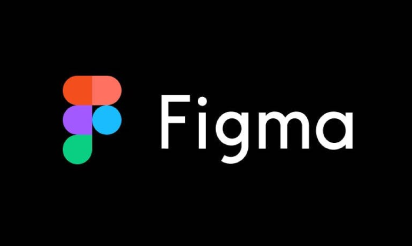
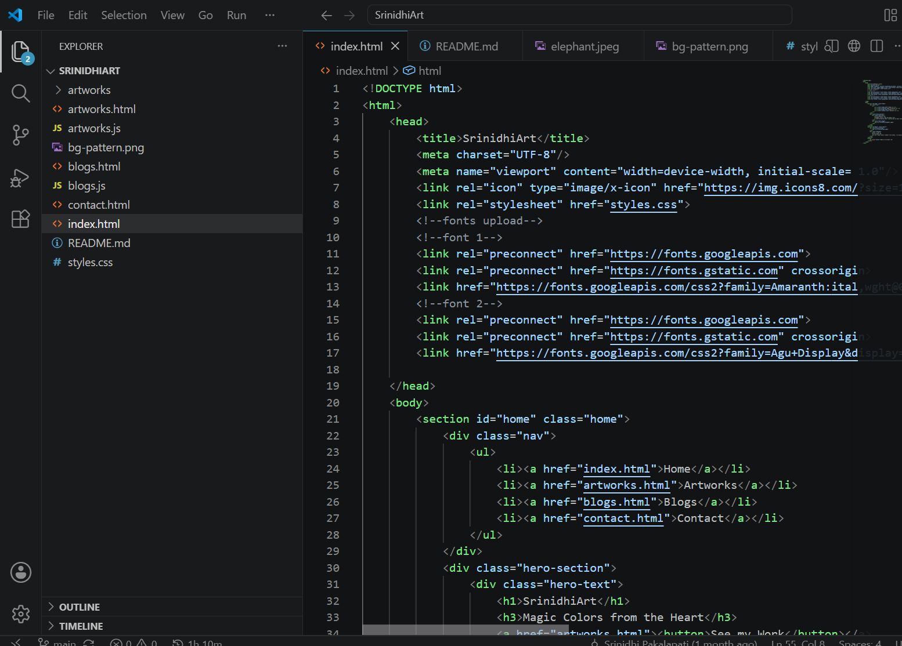

When I was thinking what project I could do, I got an idea!! Why not make a website to showcase my Art? From my childhood, art has been one of the most favorite hobby.
SrinidhiArt is my personal art portfolio website where I showcase all my artworks — traditional paintings, digital illustrations, and sketches. It has 4 pages — Home, Artworks, Blogs and Contact. Visitors can browse my art, read my blogs, and get in touch with me.
Before writing a single line of code, I designed the entire website in Figma. I chose a soft cream and slate blue color palette that felt calm and artistic. I wanted the site to feel like me — warm, creative, and minimal.

I built the entire site using HTML, CSS and JavaScript — no templates, no website builders. Every line was written by me. I learned a lot along the way — flexbox for layouts, CSS animations for the nav hover effect, and JavaScript arrays and forEach loops to dynamically generate artwork and blog cards.

The hardest part was getting the background pattern to show through sections without covering my content. I learned about z-index and CSS pseudo-elements like ::before to solve it. Every bug I fixed taught me something new.
I plan to keep adding new artworks, write more blogs about my art journey, and improve the site technically as I learn more. This website is not just a portfolio — it's a living project that will grow with me over the next 4 years.